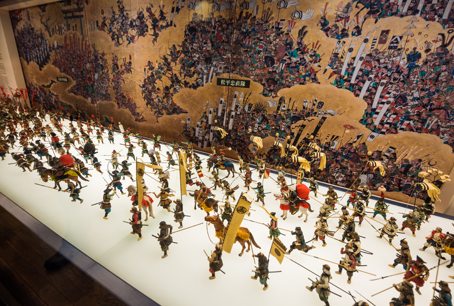

The main tower of Osaka Castle is situated on a plot of land roughly one square kilometer. It is built on two raised platforms of landfill supported by sheer walls of cut rock, using a technique called Burdock piling, each overlooking a moat. The central castle building is five stories on the outside and eight stories on the inside, and built atop a tall stone foundation to protect its occupants from attackers. The castle grounds, which cover approximately 61,000 square meters (15 acres), contain thirteen structures that have been designated as important cultural assets by the Japanese government, including: 1. Ote-mon Gate 2.Sakura-mon Gate 3. Ichiban-yagura Turret 4. Inui-yagura Turret 5. Rokuban-yagura Turret 6. Sengan Turret 7. Tamon Turret 8. Kinmeisui Well 9. Kinzo Storehouse 10. Enshogura Gunpowder Magazine 11. Three sections of castle wall all located around Otemon Gate 12. Megaliths at the castle include the Octopus stone.
In 1583 Toyotomi Hideyoshi commenced construction on the site of the Ikkō-ikki temple of Ishiyama Hongan-ji. The basic plan was modeled after Azuchi Castle, the headquarters of Oda Nobunaga. Hideyoshi wanted to build a castle that mirrored Nobunaga's, but surpassed it in every way: the plan featured a five-story main tower, with three extra stories underground, and gold leaf on the sides of the tower to impress visitors. In 1585 the Inner donjon was completed. Hideyoshi continued to extend and expand the castle, making it more and more formidable to attackers.

In 1597 construction was completed and Hideyoshi died the year after. Osaka Castle passed to his son, Toyotomi Hideyori. In 1600 Tokugawa Ieyasu defeated his opponents at the Battle of Sekigahara, and started his own bakufu (i.e., shogunate) in Edo. In 1614 Tokugawa attacked Hideyori in the winter, starting the Siege of Osaka. Although the Toyotomi forces were outnumbered approximately two to one, they managed to fight off Tokugawa's 200,000-man army and protect the castle's outer walls. Ieyasu had the castle's outer moat filled, negating one of the castle's main outer defenses. During the summer of 1615, Hideyori began to restore the outer moat. Ieyasu, in outrage, sent his armies to Osaka Castle again, and routed the Toyotomi men inside the outer walls on June 4. Osaka Castle fell to the Tokugawa clan, the Toyotomi clan perished, Hideyori and Yodo-dono committed seppuku and the castle buildings burned to the ground. In 1620, the new heir to the shogunate, Tokugawa Hidetada, began to reconstruct and re-arm Osaka Castle. He built a new elevated main tower, five stories on the outside and eight stories on the inside, and assigned the task of constructing new walls to individual samurai clans. The walls built in the 1620s still stand today, and are made out of interlocked granite boulders without mortar. Many of the stones were brought from rock quarries near the Seto Inland Sea, and bear inscribed crests of the various families who contributed them. Construction of the 5 story tenshu started in 1628 and was completed 2 years later, about the same time the rest of the reconstruction, and followed the general layout of the original Toyotomi structure. In 1660, lightning ignited the gunpowder warehouse and the resulting explosion set the castle on fire. In 1665, lightning struck and burnt down the tenshu. In 1843, after decades of neglect, the castle got much-needed repairs when the bakufu collected money from the people of the region to rebuild several of the turrets. In 1868, Osaka Castle fell and was surrendered to anti-bakufu imperial loyalists. Much of the castle was burned in the civil conflicts surrounding the Meiji Restoration. Under the Meiji government, Osaka Castle became part of the Osaka Army Arsenal (Osaka Hohei Kosho) manufacturing guns, ammunition, and explosives for Japan's rapidly expanding Western-style military.
In 1931, the ferroconcrete tenshu was built. During World War II, the arsenal became one of the largest military armories, employing 60,000 workers. American bombing raids targeting the arsenal damaged the reconstructed main castle tower and, on August 14, 1945, destroyed 90% of the arsenal and killed 382 people working there. In 1995, Osaka's government approved yet another restoration project, with the intent of restoring the main tower to its Edo-era splendor. In 1997, restoration was completed. The castle is a concrete reproduction (including elevators) of the original and the interior is intended as a modern, functioning museum.